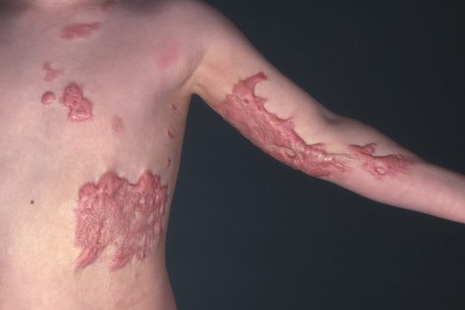
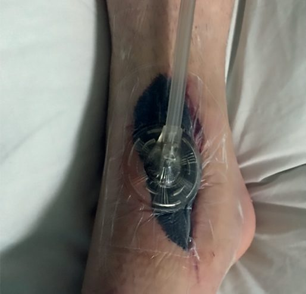
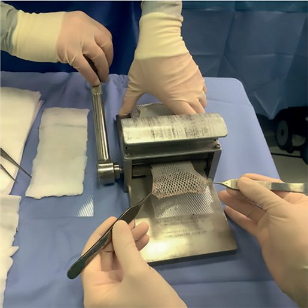
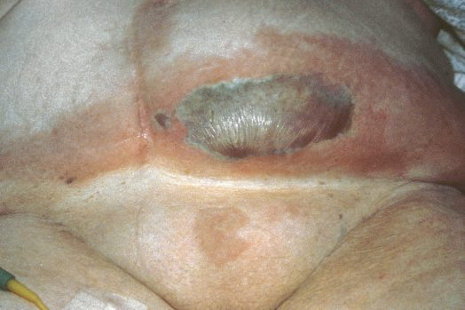

Wound Healing
Summary
- Wound healing is a complex, orderly and overlapping biological process traditionally divided into haemostasis, inflammation, proliferation and remodelling (maturation) phases [1][2].
- All healthy wounds undergo the same basic steps of repair, and orderly, timely movement through these phases is required for coordinated repair; if orderly repair does not occur, as in diabetes or other chronic conditions, wounds can remain in a phase indefinitely and fail to advance [2].
- Wounds are classified by the manner of closure into primary, secondary and tertiary (delayed primary) healing, and by contamination into clean, clean-contaminated, contaminated and dirty categories [1].
Definition
- Primary healing (healing by first intention) occurs when there is direct approximation of wound edges soon after injury, in the absence of adverse influences, giving the best scar [1].
- Secondary healing (healing by second intention) occurs in wounds that are left open and allowed to heal by granulation, contraction and re-epithelialisation [1].
- Delayed primary healing (tertiary intention) occurs when wound edges are not opposed immediately (as may be necessary in contaminated or untidy wounds) and are surgically approximated later, after debridement of non-viable tissue, once the wound is clean [1].
- Chronic wounds are, by definition, wounds that have failed to proceed through an orderly and timely reparative process to produce anatomic and functional integrity over a period of 3 months [2].
Pathophysiology
Haemostasis. Disruption of the vascular endothelium causes vasoconstriction and exposure of the subendothelial extracellular matrix, encouraging platelet adhesion, activation and aggregation to form a platelet plug; alpha granules released by activated platelets contain TGF-β, PDGF, FGF, EGF and VEGF, which drive matrix deposition, chemotaxis, epithelialisation and angiogenesis, while tissue factor at the injury site initiates the coagulation cascade, generating thrombin, which forms fibrin to stabilise the plug and provide a scaffold for infiltrating cells [1].
- Inflammation (days 1–10 or so). In the early inflammatory phase (days 1–2), platelet activation triggers an influx of neutrophils, which limit bacterial contamination; histamine and serotonin release increases vascular permeability, aiding inflammatory cell infiltration.
- In the late inflammatory phase (days 2–3), monocytes differentiate into macrophages, which phagocytose debris, release proteolytic enzymes, and are the primary source of cytokines and growth factors driving fibroblast proliferation and angiogenesis [1].
- The predominant cell type shifts from neutrophils (days 0–2) to macrophages (days 3–4) to fibroblasts (day 5 onward) [3].
- Macrophages are essential for wound healing via their release of growth factors and cytokines [3].
- Proliferation (roughly day 3 to 2–4 weeks). This phase consists mainly of fibroblast activity, producing ground substance (glycosaminoglycans and proteoglycans), collagen and new blood vessels, along with re-epithelialisation; early proliferative-phase tissue is called granulation tissue and has a characteristic pink, granular appearance [1].
- Fibronectin, produced by fibroblasts, is chemotactic for macrophages and anchors fibroblasts, and the "provisional matrix" is composed mostly of fibronectin and hyaluronic acid before fibroblasts replace the fibronectin-fibrin scaffold with collagen [3].
- Epithelial integrity, achieved by migration of epithelial cells from hair follicles (the most important source), wound edges and sweat glands, is the most important factor in healing open wounds by secondary intention, while tensile strength (dependent on collagen deposition and cross-linking) is the most important factor in healing closed incisions by primary intention [3].
- Some fibroblasts differentiate into myofibroblasts, contractile cells that help draw wound edges together [1]; myofibroblasts communicate via gap junctions and mediate wound contraction during healing by secondary intention [3].
- Remodelling (2–3 weeks to a year or more). This phase is characterised by collagen maturation: type III collagen, prevalent during proliferation, is replaced by stronger type I collagen until the normal skin ratio of about 4:1 type I to type III collagen is re-established, with increasing cross-linking and alignment producing maximal tensile strength around 12 weeks post-injury, approximately 80% of uninjured skin strength [1].
- The net amount of collagen does not change substantially during remodelling, although significant production and degradation occur simultaneously, and continued cross-linking (not increased collagen quantity) accounts for the ongoing increase in tensile strength after collagen content plateaus at about 3 weeks [3][4].
- Alpha-ketoglutarate, vitamin C, oxygen and iron are required for collagen synthesis, including hydroxylation of proline by prolyl hydroxylase and subsequent cross-linking; vitamin C deficiency (scurvy) impairs this process [3].
- Peripheral nerves regenerate at approximately 1 mm/day, and epithelialisation proceeds at 1–2 mm/day [3].
Clinical features
- Clinically, wound healing progresses through visible phases: eschar or fibrinous exudate reflects the inflammatory phase, granulation tissue reflects the proliferative phase, and a contracting or advancing wound edge reflects the maturational phase, with all four phases potentially present simultaneously in a large wound [2].
- Hypertrophic scars are raised scars that remain within the confines of the original wound and frequently regress spontaneously; they are more common in areas of increased tension, wounds crossing tension lines, deep dermal burns, and wounds left to heal by secondary intention for more than 3 weeks [1].
- Keloid scars, by contrast, extend beyond the boundaries of the original wound, do not spontaneously regress, are difficult to treat, occur more often after relatively minor trauma in darker-skinned individuals, and are more prevalent above the clavicles, on the trunk, upper extremities and face, developing in 15–20% of Black, Asian and Hispanic patients [1][2].
- Histologically, hypertrophic scars contain well-organised type III collagen with fibroblast/vessel/collagen "islands," while keloids contain disorganised type I and III collagen bundles forming thicker, acellular nodule-like structures in the deep dermis [2].
- Wound dehiscence presents as leakage of large amounts of pink "salmon-coloured" fluid from the wound and, if untreated, can progress to evisceration [3].

Etiology
- Numerous local and systemic factors influence wound healing.
- Local factors include skin tension, hypoxia and ischaemia, vascular insufficiency, lymphoedema, contamination, infection, presence of foreign bodies, and radiotherapy; systemic factors include advancing age, obesity, malnutrition, smoking, diseases such as diabetes mellitus and connective tissue disorders, immunocompromise, and medications such as steroids, immunosuppressants and chemotherapy [1].
- Impediments to wound healing include bacterial contamination above 10^5 organisms/cm² (which decreases oxygen content and causes collagen lysis and prolonged inflammation), devitalised tissue and foreign bodies (which retard granulation), cytotoxic drugs such as 5-fluorouracil, methotrexate and calcineurin inhibitors (which impair healing in the first 14 days after injury), diabetes (which impedes early inflammation via poor leukocyte chemotaxis from hyperglycaemia), serum albumin below 3.0 g/dL, corticosteroids (which inhibit macrophages, neutrophils and fibroblast collagen synthesis, reducing wound tensile strength), and wound ischaemia from fibrosis, pressure, poor arterial inflow, poor venous outflow, smoking, radiation, oedema or vasculitis [3].
- Vitamin A (25,000 IU daily) can counteract the inhibitory effects of steroids on wound healing [3].
- Genetic disorders of abnormal wound healing include osteogenesis imperfecta (type I collagen defect), Ehlers-Danlos syndrome (multiple collagen disorders, more than half due to defects in the α-chains of type V collagen), Marfan syndrome (FBN-1 gene mutation affecting fibrillin), epidermolysis bullosa, scurvy (vitamin C deficiency) and pyoderma gangrenosum [3][4].
- Keloid formation shows strong evidence of genetic susceptibility, including familial heritability, twin concordance and high prevalence in certain ethnic populations, with proposed molecular pathways including apoptosis, cytokine-cytokine receptor interaction, MAPK signalling and TGF-β/VEGF overexpression [2].
Diagnosis
- Assessment of a wound relies on clinical history and examination (duration, cause, contamination, and local/systemic risk factors listed above) together with staging by phase of healing [1].
- A widely used wound classification, introduced in 1964 by the US National Research Council and later adapted by the US Centers for Disease Control and Prevention, describes the degree of bacterial contamination of surgical wounds at the time of surgery as Class I (clean), Class II (clean-contaminated), Class III (contaminated) or Class IV (dirty) [1].
- Diabetic foot ulcers typically occur at points of pressure related to neuropathy (e.g. at the Charcot joint, classically the second metatarsophalangeal joint), because loss of protective sensation allows repeated unnoticed trauma [3].
Scoring and Severity
The National Nosocomial Infections Surveillance (NNIS) score is used to predict surgical site infection risk, stratifying wounds on an index from 0 (lowest risk) to 3 (highest risk), with one point allocated for each of several defined risk factors present [1]. The CDC surgical wound classification (Class I–IV, described above under Diagnosis) is itself a severity/contamination grading system used to predict infection risk and guide antibiotic prophylaxis decisions [1].
Treatment and Management
- Essentials for promoting wound healing include maintaining a moist environment (avoiding desiccation), optimising oxygen delivery (fluids, smoking cessation, pain control, arterial revascularisation, supplemental oxygen, aiming for transcutaneous oxygen measurement >25 mmHg), avoiding oedema through elevation, and removing necrotic tissue [3].
- Suture removal timing differs by site: approximately 1 week for the face and 2 weeks for other areas [3].
- Delayed primary closure is used to reduce the risk of wound infection when there is concern about contamination [3].
- Wound dehiscence is managed with placement of retention sutures [3].

- Prevention of adverse (hypertrophic/keloid) scarring focuses on tension relief, hydration/occlusion and taping/pressure garments, applied as soon as the wound is closed and tolerated; postsurgical taping for 3 months, moisturising lotions, and silicone sheets/gels can reduce scar thickness, discomfort and itching, and avoidance of sun exposure with SPF 50 sunscreen for a year postoperatively reduces scar hyperpigmentation [2].
- Established hypertrophic scars are treated with pressure therapy (6 weeks to 3 months post-injury), continued silicone therapy, and intralesional corticosteroid injections (triamcinolone acetonide 10–40 mg/mL every 2–4 weeks into the papillary dermis) for ongoing hypertrophy, with 50–100% of patients responding and up to 50% recurring; adverse effects include skin atrophy, hypopigmentation and telangiectasia [2].
- Keloids are treated first-line with intralesional corticosteroids combined with silicone dressings and pressure therapy; intralesional 5-fluorouracil, bleomycin and verapamil are used as adjuncts, and refractory cases after 12 months may be considered for surgical excision combined with adjuvant therapy, since excision alone carries a 50–100% recurrence rate, whereas immediate postoperative electron-beam irradiation or brachytherapy reduces recurrence by 50–95% [2].
Surgeries
- Surgical scar revision may be considered for permanent linear hypertrophic scars present after 1 year, using simple resection and primary closure, sometimes combined with adjacent tissue undermining, subcutaneous sutures, Z-plasty and postsurgical taping/silicone therapy [2].
- Correction of a scar contracture (abnormal shortening of an immature scar causing functional impairment, particularly across a joint) generally requires surgery with Z-plasty, skin graft, or flap to release tension and restore function [2].
- Refractory keloids after prolonged medical therapy may be excised surgically in combination with adjuvant radiotherapy or other adjuncts, as excision alone has a high recurrence rate [2].
- Delayed primary closure, leaving a contaminated wound open initially, then surgically approximating the edges after debridement once the wound bed is clean, is itself a surgical strategy for high-risk wounds [1].

Complications
- Hypertrophic and keloid scarring represent excessive, disorganised collagen deposition following aberrant wound healing; keloids in particular are frequently refractory to both medical and surgical intervention and can recur even after excision (50–100% recurrence with excision alone) [1][2].
- Wound dehiscence (leakage of pink "salmon-coloured" fluid) can progress to evisceration if untreated; the leading risk factor is deep wound infection, along with poor nutrition, COPD, diabetes mellitus and chronic coughing [3].
- Chronic non-healing wounds are a major complication of impaired healing: an estimated 3–4 million patients per year in the US are at risk of diabetic ulcers, up to 2 million per year develop chronic venous leg ulcers, and 2–3 million per year develop pressure ulcers from immobility, with these numbers rising alongside an ageing population and increasing prevalence of diabetes and smoking [2].
- Scar contractures across joints or involving the eyelid or mouth (causing ectropion) are a functional complication of excessive wound contraction [2].

Prognosis
- Wound tensile strength never returns to that of unwounded skin; it reaches a maximum of approximately 80% of the original strength, at around 12 weeks (Bailey & Love) or over 6–12 months (Sabiston/Schwartz's ABSITE) post-injury [1][4].
- Hypertrophic scars often regress spontaneously once the inciting stimuli (tension, growth factor stimulation) are removed, whereas keloids are genetically predisposed, do not regress spontaneously, and are frequently refractory to treatment [2].
- Chronic wounds, by definition, fail to achieve anatomic and functional integrity within an expected 3-month timeframe and carry substantial morbidity, reduced quality of life and healthcare burden [2].
References
- Bailey & Love's Short Practice of Surgery, 28th ed., Ch. 3 Wound healing and tissue repair
- Sabiston Textbook of Surgery, 22nd ed., Ch. 23 Wound Healing
- The ABSITE Review 2022, Ch. 3 Perioperative Care [Wound Healing]
- Schwartz's Principles of Surgery: ABSITE and Board Review, Ch. 9 Wound Healing